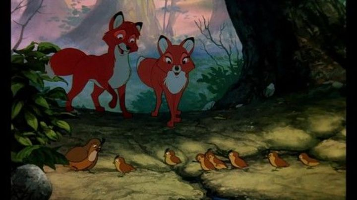

After the success of "The Rescuers," a more serious adventure for a Disney movie, the studio doubled-down with the 1981 movie "The Fox and the Hound." Baesd on a recent novel of the same name, it's almost a spiritual successor to "Bambi," but if Bambi's mother was shot by the hunter in the opening scene. Or maybe you could call this Disney's version of "Watership Down," which was animated and released a few years earlier. What I'm saying is that this is a serious movie, maybe even too serious for Disney. Behind the scenes, there were also production issues. One key character was meant to die, like the book, but upper management re-worked it for the character to survive, despite protests from younger staff that this ruined the story. A bunch of senior animators were trying to move duties to younger staff, but this led to further arguements, including Don Bluth and other animators leaving the film to start their own studio midway through production. It's unclear how much, if at all, this effected the final product.The story of "The Fox and the Hound" seems sweet on paper. After a mother fox is killed by a hunter offscreen, hiding her baby fox before her end, the baby is found and adopted by a nice old woman (Ms. Tweed) on a small country farm. But the woman's neighbor (Mr. Slade) is a hunter and trapper, likely the one that killed the mother fox, and has a trusty hunting dog (Chief) on his property, plus a second new puppy dog named Copper. They'd hunt foxes for sport and earning a living, and Tweed's pet fox, whom she named Todd, is a little too mischievous for his own good. Naturally, having both so close to each other causes problems, and Tweed and Slade didn't like each other before the fox entered the picture anyhow. It's in this tense scenario that an unlikely friendship between Todd and Copper, a baby fox and hound, develops. After all, they're just kids, and aren't aware of the invisible rules that state they'd one day be enemies. And one day, they do become enemies. After coming back from a hunting trip, grown up, Copper has accepted his role and the reality that he can't be friends with Todd. And Todd's presence causes more trouble, nearly killing Chief, giving Mr. Slade and Copper a new vendetta to kill Todd. Even Ms. Tweed understands that Tood is too big to live as a pet, and returns him to the wild, where he naturally has a hard time adjusting. Things seem OK when he meets a pretty female fox, but Slade and Copper haven't given up on hunting the animal, and Todd now has no protection (although, in the wild, neither do the hunters).  It's a serious story with an important, meaningful message. But it's dark, and for children, rather slow and dull. The dialogue feels a bit wooden too, compared to the snappy and sharp writing from Disney's other recent movies. The story tries to liven things with comic-relief side characters, like a mentor owl named Big Mama, and a little bird and woodpecker that are constantly hunting a crafty caterpillar. But their roles feel too familiar to prior side characters, and the slow movie might have been better to cut them in favor of a shorter runtime (this was one of Disney's longest movies yet at the time). Even the new characters Todd meets in the forest as an adult, including the lady fox, don't feel right. While they do keep things fresh, they aren't featured long enough to feel deveoped or earn their place in the story. Which is ultimately a good story, I'd repeat, with potential to be Disney's strongest since "Bambi." It just isn't particularly fun to watch. The production quality is good, but again, it leans into the serious nature. The opening credits have no music or sound at all, a first, showing the title against an ominous morning fog in the forest. The forest and farms (and those living there) are rendered and animated well. But the songs, all sung by Big Mama owl, are unusually forgettable (except for the classic track "Best of Friends"). The actors include Mickey Rooney and Kurt Russell as the adult Todd and Copper, the biggest names yet for Disney's animated works, but their performances were just... fine. The same could be said for the kid-versions of the characters, where the kid-actors used didn't impress me, or feel as natural, as prior movies. Reusing other frequent Disney actors is also getting increasingly noticable at this point, like when the woodpecker character sounds and laughs exactly like Tigger from "Winnie the Pooh." "The Fox and the Hound" is a good movie with a great story. But it's not a great movie with a great story. And because it risked having a serious tone over a fun story for children, it's one of the few classic Disney movies that I almost never consider rewatching; I'd go rewatch "Bambi" instead.
- "Ani" More reviews can be found at : https://2danicritic.github.io/ Previous review: review_The_Flight_of_Dragons Next review: review_The_Fruit_of_Grisaia,_The_Labyrinth_of_Grisaia,_The_Eden_of_Grisaia